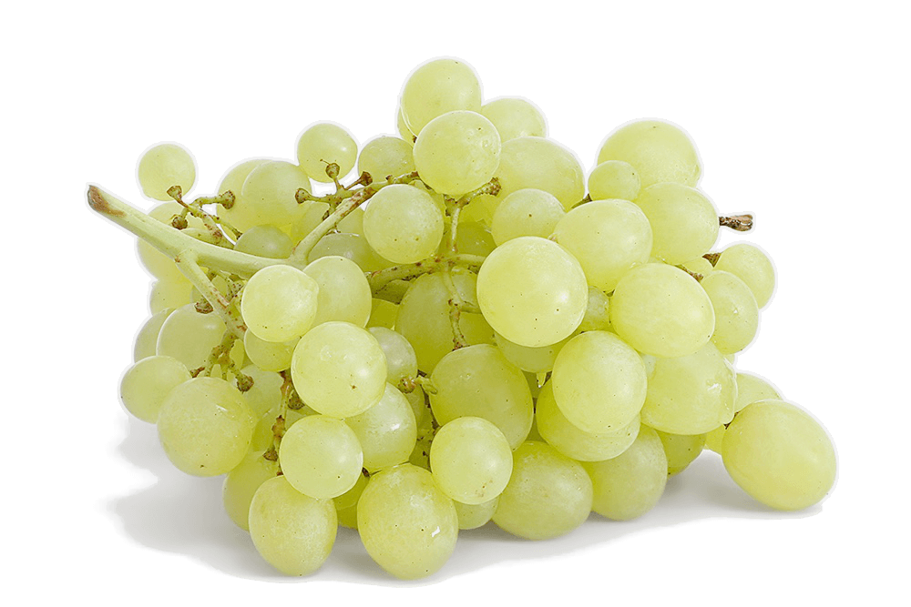

Grapes
The cultivation of the domesticated grape began 6,000–8,000 years ago in the Near East. Yeast, one of the earliest domesticated microorganisms, occurs naturally on the skins of grapes, leading to the innovation of alcoholic drinks such as wine. The earliest archeological evidence for a dominant position of wine-making in human culture dates from 8,000 years ago in Georgia. The oldest winery was found in Armenia, dating to around 4000 BC. By the 9th century AD the city of Shiraz was known to produce some of the finest wines in the Middle East. Thus it has been proposed that Syrah red wine is named after Shiraz, a city in Persia where the grape was used to make Shirazi wine. Ancient Egyptian hieroglyphics record the cultivation of purple grapes, and history attests to the ancient Greeks, Phoenicians, and Romans growing purple grapes for both eating and wine production. The growing of grapes would later spread to other regions in Europe, as well as North Africa, and eventually in North America. In North America, native grapes belonging to various species of the Vitis genus proliferate in the wild across the continent, and were a part of the diet of many Native Americans, but were considered by European colonists to be unsuitable for wine. Vitis vinifera cultivars were imported for that purpose.
The oldest winery was found in Armenia, dating to around 4000 BC. By the 9th century AD the city of Shiraz was known to produce some of the finest wines in the Middle East. Thus it has been proposed that Syrah red wine is named after Shiraz, a city in Persia where the grape was used to make Shirazi wine. Ancient Egyptian hieroglyphics record the cultivation of purple grapes, and history attests to the ancient Greeks, Phoenicians, and Romans growing purple grapes for both eating and wine production. The growing of grapes would later spread to other regions in Europe, as well as North Africa, and eventually in North America. In North America, native grapes belonging to various species of the Vitis genus proliferate in the wild across the continent, and were a part of the diet of many Native Americans, but were considered by European colonists to be unsuitable for wine. Vitis vinifera cultivars were imported for that purpose.
Grapes are a type of fruit that grow in clusters of 15 to 300, and can be crimson, black, dark blue, yellow, green, orange, and pink. "White" grapes are actually green in color, and are evolutionarily derived from the purple grape. Mutations in two regulatory genes of white grapes turn off production of anthocyanins, which are responsible for the color of purple grapes. Anthocyanins and other pigment chemicals of the larger family of polyphenols in purple grapes are responsible for the varying shades of purple in red wines. Grapes are typically an ellipsoid shape resembling a prolate spheroid.